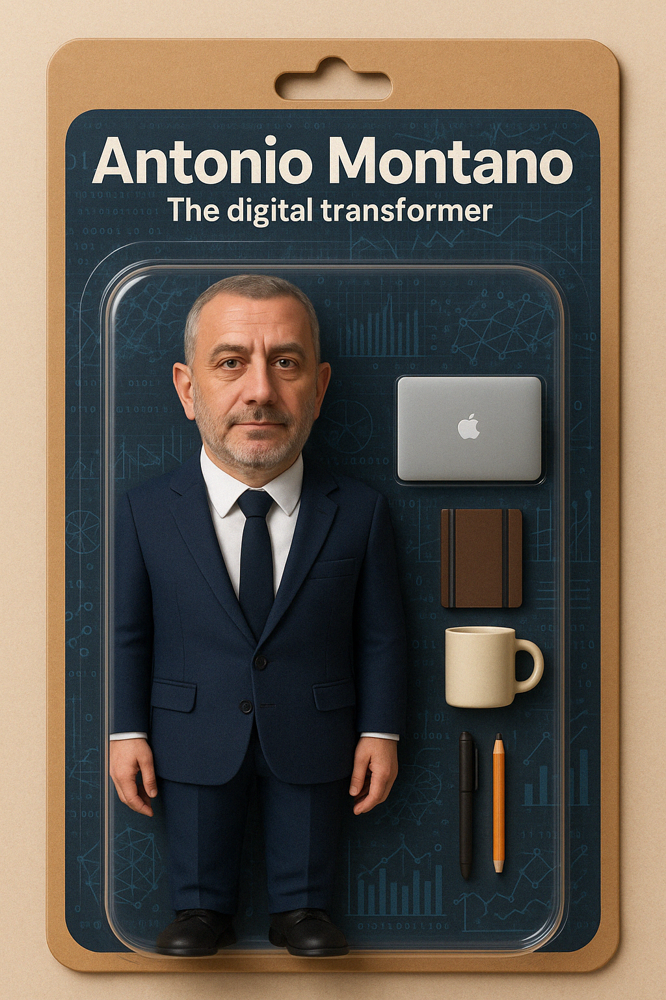

Prologue
We are living through one of the most exhilarating moments in the history of technology. Every day, new breakthroughs in machine learning, data pipelines, automation, and edge computing rewrite the boundaries of what’s possible. For me, being an interim manager in this landscape is not just a job—it’s a creative calling, a unique opportunity to shape the future of how businesses operate, grow, and thrive.
I don’t just help companies “go digital”—I help them reimagine what they can become. My work is about turning vision into architecture, uncertainty into opportunity, and potential into working systems. I bring together strategy and execution, architecture and operations, culture and code. And in this era, where AI reshapes every domain it touches, I see my role as both a builder and a guide—someone who can sketch the future and then lead the team that gets us there, step by step, sprint by sprint.
Innovation is a verb
There’s an energy that comes from designing a product that didn’t exist yesterday. From breathing life into a dormant business unit. From taking a napkin sketch and turning it into a working platform, live, with real users. That’s the energy that fuels me—and that’s where innovation truly lives: not in slides, but in systems that ship.
Whether I’m prototyping a recommendation engine using the latest ML framework, or helping a traditional manufacturer embrace real-time analytics across their supply chain, I feel the thrill of invention. Innovation isn’t a buzzword—it’s the moment a complex system clicks into place, and the organization suddenly accelerates. It’s solving the hard problem elegantly. It’s building something that makes people say, “Why didn’t we do this before?”
True innovation doesn’t come from technology alone. It comes from framing the right problems, engaging the right minds, and designing systems that reflect both strategic intent and operational reality. It comes from curiosity, courage, and a commitment to execution.
Technology as a force multiplier
As an enterprise and system/software architect, I’ve always looked at technology as more than tools—it’s an amplifier of strategy. My strength is helping organizations harness the chaos of technological change and direct it toward meaningful impact. This means choosing the right stack, designing scalable and secure systems, and aligning every feature to a business goal.
But what excites me most right now is how machine learning is reshaping everything—from pricing engines to supply chains, from customer engagement to predictive maintenance. When you combine solid architecture with ML-native thinking, you don’t just automate processes—you transform them. You move from reactive to predictive, from complex to intuitive.
Let me give you a few examples—each inspired by real transformations I’ve led:
Machine learning as a 24-hour workforce: I’ve helped organizations build ML pipelines that continuously monitor systems, detect anomalies, and suggest next-best actions without human intervention. These systems work tirelessly, learning patterns, flagging anomalies, and optimizing operations. What used to take teams of analysts now happens around the clock, freeing up people to focus on creative and strategic challenges. For example, a power and natural gas trading desk used ML models to optimize bids based on real-time pricing signals, dramatically improving overnight operations.
Modern ERPs as collaboration engines: In one transformation for a manufacturing group, we implemented a next-gen ERP not just to digitize workflows, but to unify siloed departments—operations, finance, logistics, and marketing—into a single nervous system. Real-time data, shared metrics, and role-based access allowed everyone to collaborate and make decisions with confidence. The software didn’t just support the business—it helped shape it. It dissolved friction, enabled transparency, and created a culture of shared accountability.
Cybersecurity as a business enabler: I’ve worked with organizations facing the pressure of NIS2 and similar regulatory frameworks. Instead of seeing compliance as a burden, we turned it into a roadmap for maturity—leveraging standards like ISO 27001 and IEC 62443 to introduce secure-by-design practices, formal governance models, and operational resilience. One such engagement in the water treatment and energy storage sector not only met compliance goals, but established cybersecurity as a critical pillar of trust and operational excellence.
Cloud-native platforms that scale and evolve: In the education and fintech sectors, I’ve led the architecture and launch of platforms that are not only scalable and cost-efficient, but designed for speed of change. Using serverless technologies and CI/CD pipelines, we deployed live environments capable of reacting in near real-time to user behavior and business needs—accelerating innovation cycles and slashing operational overhead.
M&A as a catalyst for transformation: In post-acquisition settings, I’ve supported carve-outs and integrations that required both technical dexterity and emotional intelligence. From migrating enterprise systems to redefining operating models, these engagements turned potentially disruptive transitions into accelerants for long-term growth.
These are just some of the ways we can use today’s technologies not as constraints, but as catalysts for real change. The exciting part? Every company, in every industry, now has the tools to innovate faster than ever before—if they are bold enough to act.
Frameworks that enable rapid change
What makes change sustainable—and repeatable—is not just inspiration, but method. Over the years, I’ve developed an adaptive approach grounded in best practices across architecture, project management, and organizational change. These aren’t dogmas—they’re living toolkits I shape to match the maturity, scale, and structure of each organization I step into.
TOGAF & ArchiMate: These provide the foundation for strategic coherence. I use them to map current and target states, align business goals with system design, and guide transformation at the enterprise level. In flat organizations, I focus on visual clarity and decision mapping. In more hierarchical settings, I use the frameworks to align sponsors and bridge functional silos.
Agile & DevOps: For product and system delivery, I adapt these methods to the organization’s tempo. In start-ups, that means lean, user-focused iterations. In larger enterprises, it’s about blending agility with governance—setting up squads, sprints, and pipelines without losing sight of risk and compliance.
ITIL & change management: Change can’t be just fast—it has to be stable. I often integrate ITIL practices to make sure changes are controlled, support is structured, and services are resilient. Particularly in regulated industries or post-merger environments, these practices help reestablish trust across the board.
Design thinking & co-creation: Especially when transforming customer-facing platforms, I involve stakeholders across disciplines in structured ideation and co-design. This ensures that what we build is not just technically sound, but truly adopted.
Zero trust & security by design: In today’s threat landscape, I embed security from the start. Whether aligning to ISO/IEC 27001 or implementing IEC 62443 in operational environments, my approach is always proactive, integrating security architecture into every layer of system design.
These practices aren’t templates—they’re frameworks for clarity and momentum. I assess, adapt, and apply them quickly, helping organizations move from confusion to clarity, from paralysis to progress.
The joy of transformation
Interim management means I get to dive into the deep end of change. Sometimes it’s about fixing what’s broken. Other times it’s about building what’s never been built. Always, it’s about listening, mapping, and making. It’s about stepping into complexity and making sense of it—not with theory, but with plans, teams, and systems that move.
The thrill lies in the first diagram on the whiteboard—the architecture that starts as a question mark and turns into a launchpad. In the war room where we push a go-live despite the odds. In the hallway chat where someone says, “This finally feels like progress.”
Every engagement is a story of momentum. A story of making the invisible visible. A story of resilience, iteration, and evolution. Whether it’s reengineering a legacy system, launching a new digital product, or helping two departments finally speak the same language through integration, the reward is always the same: transformation that sticks.
And it’s not just the tech. It’s the people. Seeing teams grow, silos fall, and confidence bloom—that’s what keeps me coming back. Because real transformation touches everything: mindset, habits, governance, culture. That’s where interim leadership makes the difference. I don’t just deliver a system—I leave behind a stronger organization.
Why I choose interim management
People often ask me why I choose to work as an interim manager—why step into pressure-cooker environments, where expectations are high, time is short, and resistance to change is often baked into the culture? The answer is simple: because this is where transformation truly begins.
Change is hard. Not just operationally, but psychologically. Human beings are wired for predictability. We’re conditioned to preserve routines, protect turf, and resist ambiguity. When I walk into an organization, I expect to meet skepticism, fear, and inertia—because these are natural reactions to disruption. But I also know how to move through them.
What motivates me is the challenge of turning resistance into momentum. I find fulfillment in leading teams through discomfort, in helping individuals reconnect with purpose, and in showing that new ways of working aren’t a threat—but a path to growth. I’ve learned that the most powerful part of transformation isn’t the technology—it’s the shift in mindset that comes when people realize they’re capable of more than they thought.
Beyond being technology-savvy, I lead with empathy. This enables me to quickly establish a genuine connection with people at all levels—from executives to front-line staff. I listen actively, sense emotional undercurrents, and adapt my communication to meet people where they are. This human connection is often what unlocks change. Because even the best systems will fail without trust, and trust begins with empathy.
As an interim manager, I embrace this tension. I’m there to drive outcomes, to push past excuses, to install clarity where there was chaos. But I’m also there to listen, to empathize, and to guide. I don’t just want to implement change—I want to anchor it in the culture, to leave behind systems that work and people who believe in them.
People often ask me why I choose to work as an interim manager—why step into pressure-cooker environments, where expectations are high, time is short, and resistance to change is often baked into the culture? The answer is simple: because this is where transformation truly begins.
Change is hard. Not just operationally, but psychologically. Human beings are wired for predictability. We’re conditioned to preserve routines, protect turf, and resist ambiguity. When I walk into an organization, I expect to meet skepticism, fear, and inertia—because these are natural reactions to disruption. But I also know how to move through them.
What motivates me is the challenge of turning resistance into momentum. I find fulfillment in leading teams through discomfort, in helping individuals reconnect with purpose, and in showing that new ways of working aren’t a threat—but a path to growth. I’ve learned that the most powerful part of transformation isn’t the technology—it’s the shift in mindset that comes when people realize they’re capable of more than they thought.
As an interim manager, I embrace this tension. I’m there to drive outcomes, to push past excuses, to install clarity where there was chaos. But I’m also there to listen, to empathize, and to guide. I don’t just want to implement change—I want to anchor it in the culture, to leave behind systems that work and people who believe in them.
A Call to the bold
If you’re a CEO wondering how to make sense of today’s tech explosion, or a headhunter looking for someone who can bring both speed and structure to the table, we should talk. I’m not afraid of complexity. I thrive in it. I know how to translate vision into velocity.
I bring clarity when it’s needed most. I build systems that don’t just scale—they inspire. I work across boundaries—technical and human—to shape platforms, products, and organizations ready for the next wave of innovation.
The future isn’t waiting. Let’s architect it together.